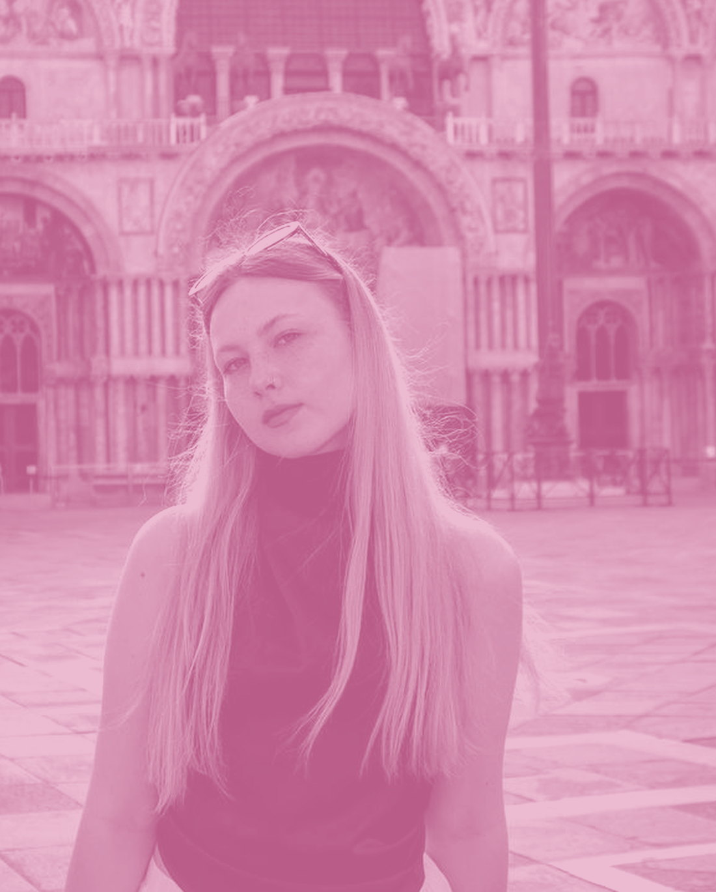
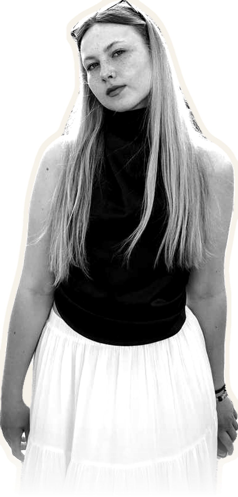

hello —
ABOUT

Creative producer working across music, media, film and event production. I find the people worth hearing, then build the conditions where they actually get heard.
- Kazan, Tatarstan
Things that keep me going
- a room that goes quiet at the right moment
- soundcheck, before anyone arrives
- an artist nobody has written about yet
- iced coffee, honestly


About me
Most of my work happens in Kazan and the regions around it. Regional and indigenous music scenes here get described from the outside, in the past tense. I’m interested in them as they are — changing, arguing with themselves, alive.
Film and media are the same instinct pointed at a different tool. Production is the part I like most: riders, negotiations, soundchecks, the scaffolding that decides whether anything reaches an audience at all.
- Russian — native
- English — C1
- Spanish — A2